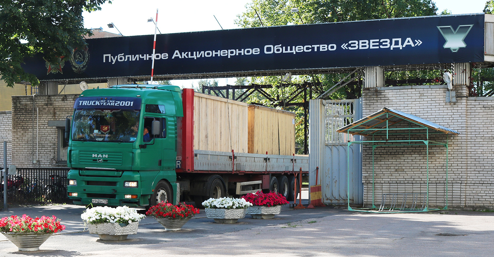

О компании
История создания и развития

ПАО «ЗВЕЗДА» является одним из ведущих предприятий в области машиностроения и производства высокооборотных дизельных двигателей. Наша уникальная история берет свое начало еще в первой половине XX века. Год создания предприятия — 1932 год. Изначально завод проектировался как мощная база для обеспечения оборонного и гражданского сектора передовыми технологиями.
Основатели завода — выдающиеся инженеры и государственные деятели своего времени, которые заложили прочный фундамент качества. На протяжении десятилетий компания росла, модернизируя оборудование и расширяя ассортимент выпускаемой продукции. Мы всегда шли в ногу со временем, осваивая новые горизонты и отвечая на вызовы эпохи.
Сегодня завод — это огромный комплекс площадью сотни тысяч квадратных метров, на котором трудятся тысячи квалифицированных специалистов. Мы гордимся тем, что наши изделия используются не только на территории Российской Федерации, но и экспортируются в десятки стран мира. Каждый год мы инвестируем в модернизацию производства, внедряем цифровые технологии и автоматизируем процессы, чтобы гарантировать высочайшее качество и надежность.
Направления деятельности
Основными направлениями нашей работы являются:
- Разработка и производство судовых высокооборотных дизельных двигателей.
- Проектирование и выпуск дизель-генераторов для автономных электростанций.
- Создание уникальных редукторных передач для тяжелого машиностроения.
- Сервисное обслуживание и ремонт по всему миру.
Мы предлагаем комплексные решения для различных отраслей промышленности, от судостроения до малой энергетики. Наши агрегаты способны работать в экстремальных условиях: при сверхнизких температурах Арктики и в тропическом климате. Надежность, проверенная временем — вот наш главный девиз.
Помимо серийного производства, наше конструкторское бюро выполняет индивидуальные заказы. Мы разрабатываем двигатели и энергоустановки с учетом специфических требований заказчиков, что позволяет нам успешно конкурировать с ведущими мировыми производителями. Научно-исследовательская база компании оснащена современными стендами для проведения полного цикла испытаний, включая ресурсные, климатические и вибрационные тесты.
Наши достижения и награды
За годы успешной работы ПАО «ЗВЕЗДА» было удостоено множества высоких государственных и международных наград. В их числе — ордена за выдающийся вклад в развитие отечественной промышленности, дипломы профильных выставок и престижные премии качества. Наша продукция неоднократно признавалась «Лучшим товаром года» в своих категориях.
Важным достижением является создание полностью импортонезависимых агрегатов. В условиях глобальных экономических изменений мы смогли не только сохранить производственные темпы, но и увеличить долю локализации компонентов до 99%. Мы активно сотрудничаем с ведущими техническими вузами страны, привлекая молодые таланты и формируя научную элиту будущего.
Корпоративная ответственность
Мы осознаем свою ответственность перед обществом и окружающей средой. На заводе внедрены строгие экологические стандарты, направленные на минимизацию углеродного следа и безопасную утилизацию производственных отходов. Наши новые двигатели соответствуют самым жестким международным экологическим нормам.
Кроме того, компания реализует масштабные socialные программы для своих сотрудников: обеспечивает добровольное медицинское страхование, предоставляет возможности для санаторно-курортного лечения, поддерживает спортивные инициативы и финансирует образовательные курсы для повышения квалификации.
Будущее — за инновациями и профессионализмом. ПАО «ЗВЕЗДА» продолжает свой уверенный путь вперед, опираясь на богатый опыт прошлого и смело глядя в завтрашний день.